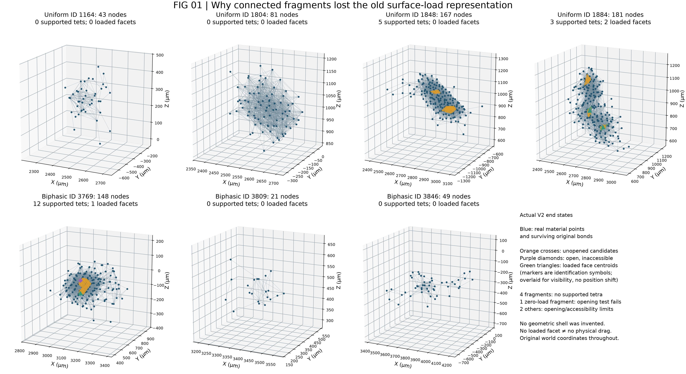
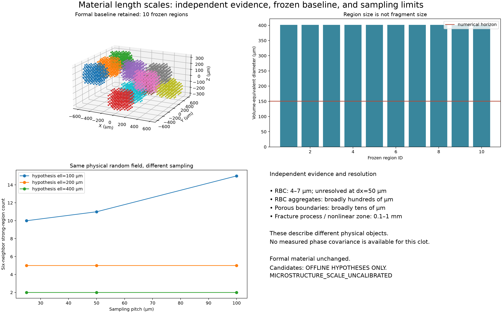
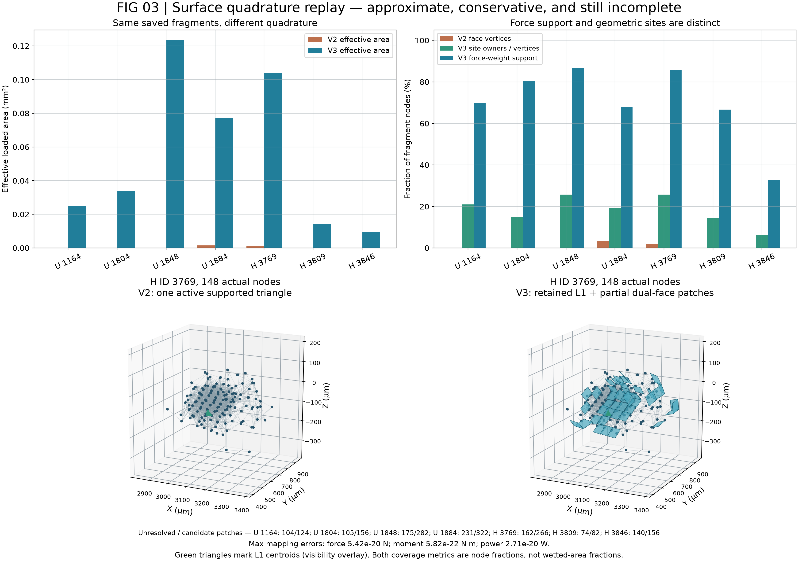
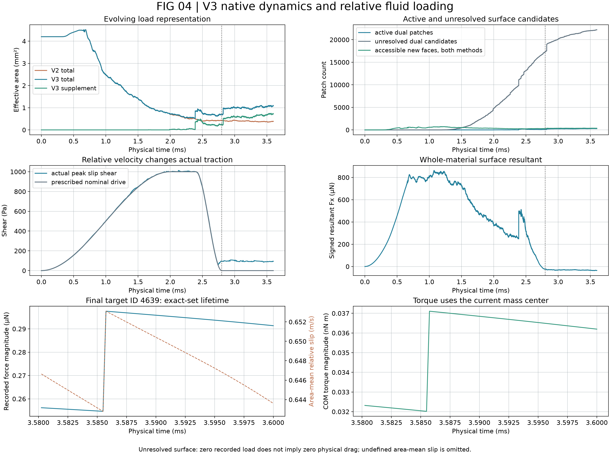
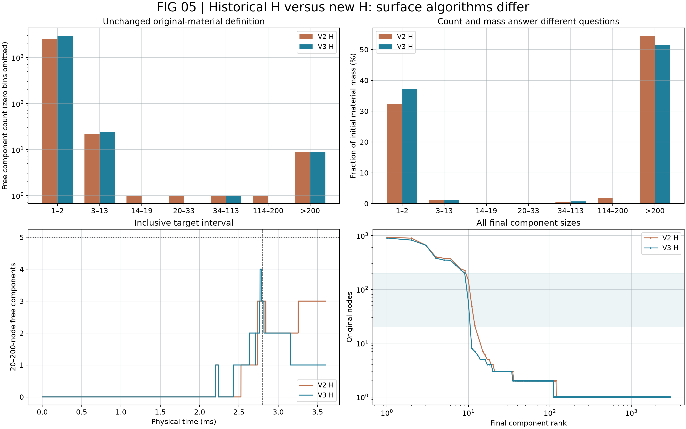
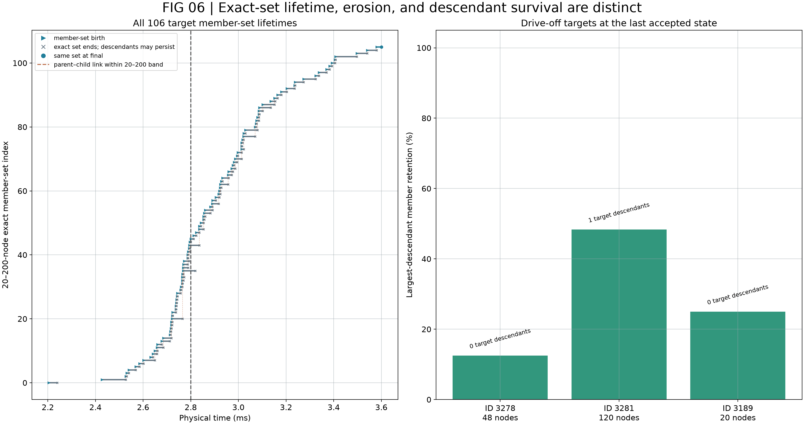
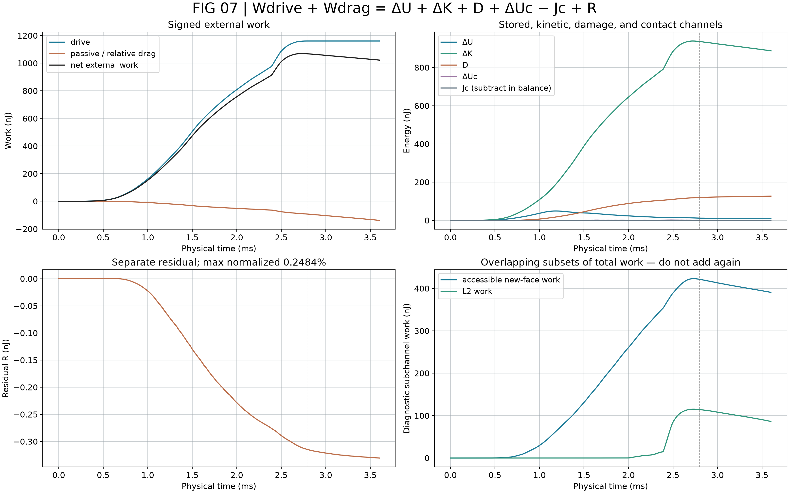
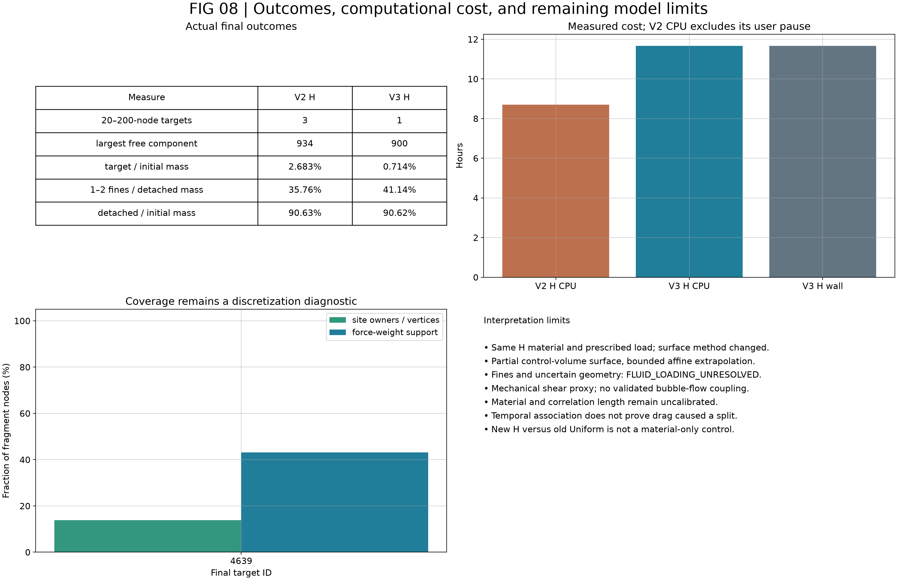

碎块表面耦合 V3
末态没有达到至少 5 个目标块的节点数条件；末态 1 块，时程最大 4 块。原生状态：COMPLETED。
探索性未标定材料 · 规定剪切机械代理 · 部分近似表面耦合
中文科研审查 复现说明 最终状态 表面方法 物理尺度证据 原生验证 逐态尺寸统计 目标块受力／功率 末态未解析原因 映射门限余量 完整能量账本 碎块谱系 同成员运动比较 原始数据范围
FIG_01_SURFACE_REPRESENTATION_FAILURE
矢量 PDF
FIG_02_MATERIAL_LENGTH_SCALE_ANALYSIS
矢量 PDF
FIG_03_SURFACE_QUADRATURE_BEFORE_AFTER
矢量 PDF
FIG_04_NATIVE_SURFACE_LOADING
矢量 PDF
FIG_05_FRAGMENT_SIZE_DISTRIBUTION
矢量 PDF
FIG_06_FRAGMENT_LINEAGE_AND_SURVIVAL
矢量 PDF
FIG_07_FULL_ENERGY_LEDGER
矢量 PDF
FIG_08_OUTCOMES_COST_AND_LIMITATIONS
矢量 PDF
VIDEO_01_SURFACE_COUPLING_BEFORE_AFTER
1920×1080 · 24 fps · 原生接受态真实坐标；具体时间见 帧来源表。
VIDEO_02_FRAGMENT_FLUID_TRACTION_AND_SURVIVAL
1920×1080 · 24 fps · 原生接受态真实坐标；具体时间见 帧来源表。